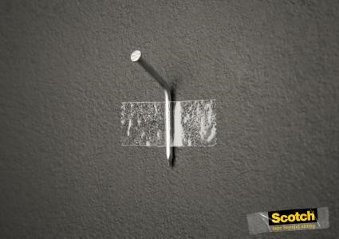

내용1
클래스
아이디
가상요소 선택자
- 내용1
- 내용2
- 내용3
- 내용4
- 내용4.1
- 내용5
링크 버튼
박스모델1
인라인 태그
position_test
AbcDefgHijKlmnoP
container
font_test

박스에 대한 배치를 변경 (기본 static)
position : static
기본값(default)
주변의 요소들에 의하여 위치가 결정됨
문서 형태의 배치 방법
position : relative
상대 배치 방식
본래 있었던 자신의 위치를 기준으로 지정한 오프셋 속성의 값만큼 떨어져서 배치됨
다른 요소들의 배치 위치에 영향을 주지 않으면서 이동하여 배치
absolute 적용된 부모인 경우 기준 블록이 됨
position : absolute
절대 배치 방식
요소가 포함된 컨테이닝 블록을 기준으로 지정한 오프셋 속성값 만큼 떨어져서 배치
본문 요소 위에 떠있는 형태, 레이어(layer), 본문 요소와 겹쳐짐
상위 요소가 모두 static이면 body를 기준으로
가장 가까운 부모가 static이 아니면 해당 요소가 기준 블록이 됨
position : fixed
고정 방식
스크린 기준으로 배치
스크롤 바가 나타나서 스크롤이 되더라도 항상 같은 위치에 배치됨
IE7 이상에서 사용가능
div{position:absolute;}
위치 이동하기
position이 relative, absolute, fixed일때 사용가능 (static일때는 작용안함)
top : 위에서부터의 거리
bottom : 아래에서부터의 거리
left : 왼쪽에서부터의 거리
right : 오른쪽에서부터의 거리
AbcDefgHijKlmnoP
1 2 3 4 5 6
7 8 9 0